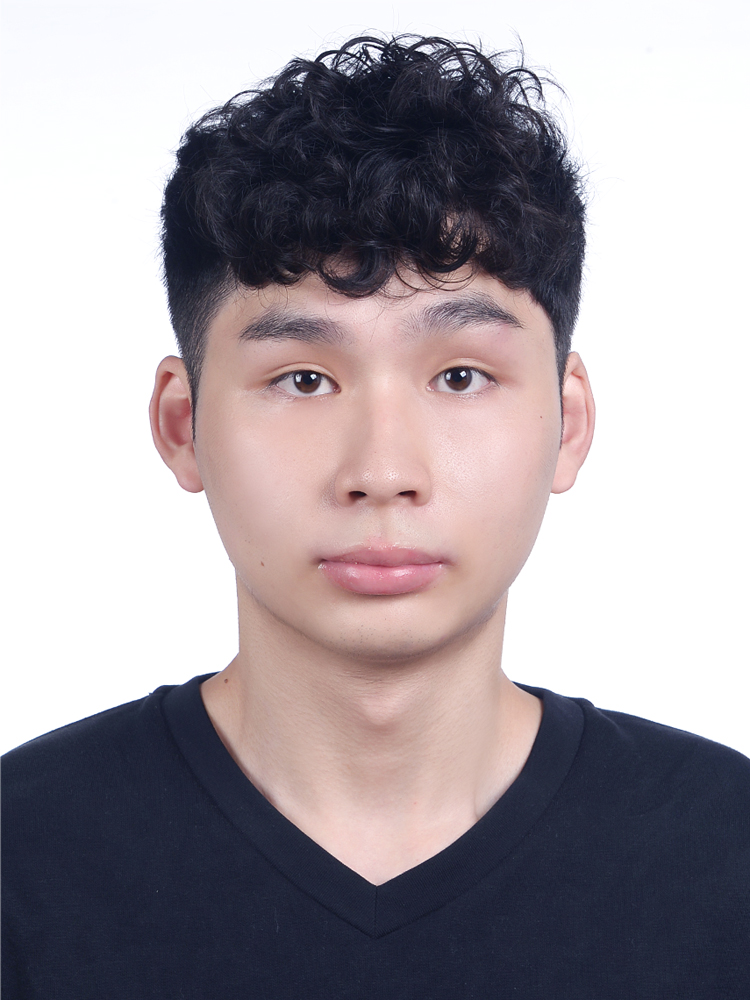

2025/09 ～ 2027/06（預）
國立臺北科技大學
技術及職業教育研究所 ｜ 碩士
數位學習組，日間就讀中
論文題目：多模態生成式 AI 評量五專幼保科學生試教練習影片之評分一致性與系統調校研究

我擅長把部門裡重複、靠人工彙整的工作，做成可排程、可交接、跨部門都能用的自動化工具。在成鼎電工，我以 AI 與 n8n、Google Apps Script 串接內部資料，打造能查詢消防法規與維護工法的 RAG 問答機器人，也擔任內部講師，帶同仁學會 AI agent 人機協作，讓工具真正被用起來。我同時是數位學習研究所的碩士生，熟悉數位學習與教學設計，能把技術轉成同仁聽得懂、做得到的訓練與文件。我樂於溝通、個性好學，會主動追蹤 AI 新知並自主學習，也曾參加台積電設備元件機台基礎培訓（32 小時）。